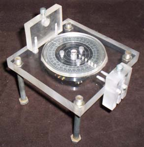
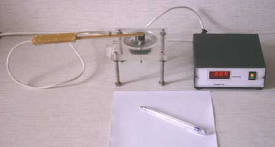
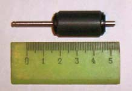
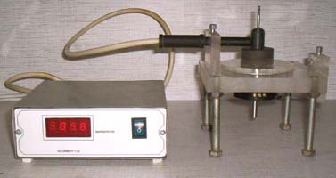
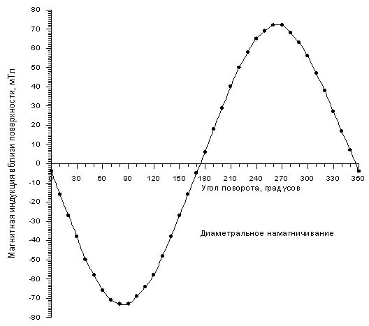

Поворотный столик с датчиком угла поворота для изучения топографии магнитного поля

Назначение
Поворотный столик с датчиком угла поворота в комплекте с тесламетром [3] позволяет исследовать топографию магнитного поля постоянных магнитов и магнитных систем с аксиальной симметрией. Снятие показаний можно производить вручную или в автоматическом режиме при подключении к двухкоординатному самописцу или компьютеру через двухканальный аналого-цифровой преобразователь (АЦП) [2]. По сравнению с различными визуальными методами изучения магнитных полей [1] этот метод позволяет получать точные пространственные значения магнитной индукции, пригодные для дальнейшей цифровой обработки. В противовес другим подобным установками контроля топографии магнитного поля [4, 5] поворотный столик имеет существенно меньшие размеры и вес и может использоваться гораздо более оперативно.
Технические данные:
Конструкция
Поворотный столик представляет из себя немагнитное основание, на котором закреплен прецизионный потенциометр. К оси потенциометра крепится поворотный круг. На него устанавливается исследуемый постоянный магнит или магнитная система. На основании столика имеются зажимы для фиксации щупа тесламетра. Для визуального отсчета на основание нанесена угловая шкала, а на поворотный круг - специальные метки. Исследуемый постоянный магнит (или магнитная система) крепится в центре поворотного круга таким образом, чтобы ось симметрии магнита совпадала с поворотной осью столика. Щуп тесламетра фиксируется в зажиме на требуемом расстоянии от магнита. На рис. 1 показана установка для снятия вручную углового распределения аксиальной составляющей магнитной индукции кольцевого постоянного магнита.

Рис. 1. Внешний вид установки для снятия вручную топографии магнитного поля кольцевого магнита: поворотный столик в комплекте с цифровым тесламетром [7].
Практическое применение
В электрических машинах (электродвигателях, электрогенераторах, датчиках) в качестве роторов могут применяться цилиндрические постоянные двухполюсные магниты, намагниченные по направлению диаметра (рис. 2) в установке импульсного намагничивания [6].

Рис. 2. Ферритовый ротор (диаметр 15 мм, длина с осью 60 мм, материал феррит бария 6БИ240, намагничивание по диаметру).
На рис. 3 показана установка для снятия углового распределения радиальной составляющей магнитной индукции вблизи поверхности диаметрально намагниченного магнитного ротора (вдоль экватора).

Рис. 3. Установка для изучения топографии магнитного поля ротора: поворотный столик в комплекте с цифровым тесламетром [7].
Угловое распределение радиальной составляющей магнитной индукции ротора близко к синусоидальному (рис. 4).

Рис. 4. Распределение радиальной составляющей магнитной индукции вдоль экваториальной линии диаметрально намагниченного цилиндрического магнита (ротора).
Ссылки:
17.03.2004
09.09.2005
23.06.2010
01.11.2013
25.01.2018
Альтернативные источники
энергии
Компьютеры и
Интернет
Магнитные поля
Механотронные системы
Перспективные
разработки
Электроника и
технология